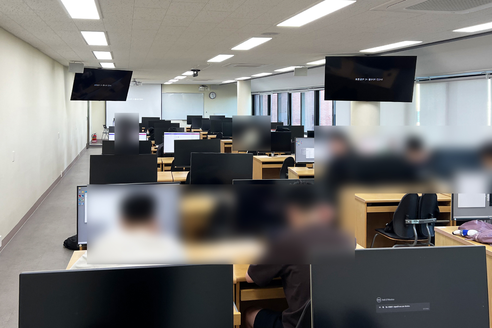

뷰가 뻥 뚫려있어 경치가 좋은 프로그램 실습실 B333
창문 뷰도 좋고 강의실이 길쭉해서 개방감이 좋아요

출처 안내— 사진: 본인 직접 촬영 / 정보: 작성자 본인 작성
이 장소가 의미 있는 이유
언리얼엔진 등 고사양 컴퓨터가 필요한 과제는 이 실습실을 이용하세요!
찾아가는 방법
- 소피아바라관으로 입장합니다
- 계단을 타고 3층까지 걸어 올라갑니다
- 짜잔
여기에서 해볼 것
- 언리얼 엔진 등 고사양 프로그램 실습하기
- 아래층에서 학식 먹기